Thyroid Collection and Normal Cells
On This Page
FNA of Thyroid
- Thyroid cancers present as nodules but so do benign conditions
- Thyroid cancers are the most common type of endocrine malignancy
- Thyroid cancer is rare with only 5% of nodules being malignant
- The main indication for thyroid FNA is the presence of a solitary thyroid nodule
- FNA distinguishes neoplastic from non-neoplastic conditions and determines the need for surgical procedures
- Overlaps in cytologic features among neoplastic and non-neoplastic processes are a potential for diagnostic pitfalls
- FNA is performed by endocrinologist, head and neck surgeon, radiologist, or pathologist
- Suggested that clinicians perform more than 100 FNA procedures in a relatively short time to gain expertise
- Goiter is a clinical term indicating thyroid enlargement
- Typically caused by impaired synthesis of thyroid hormone often associated with dietary iodine deficiency
- Goitrogens are chemicals that inhibit thyroid gland function and cause gland enlargement
- Oxidation of iodine is important for thyroid hormone production and diets low in iodine, which is common in many parts of the world
- Not candidates for FNA
- Complete clinical evaluation and history is crucial
- Risk factors associated with age, gender, family history, and diet
- On clinical examination, differentiate from enlarged lymph nodes and lesions in other sites
- Most often, procedure is performed by palpation or under ultrasound (US) guidance
- Other imaging techniques include CT, MRI, X-ray, PET, and radionuclide scans
- US looks for solid to cystic lesions, microcalcifications, irregular borders, increased vasculature, and spread
- Radionuclide scan uses radioactive iodine uptake to differentiate hot nodules from cold nodules which have no uptake and increased risk of cancer
- Laboratory findings are important but thyroid function tests are not helpful
- Low levels of thyroid stimulating hormone (TSH) prompt radionuclide scan while high levels prompt FNA
- Antithyroid hormones are associated with Hashimoto’s disease
- High levels of calcitonin and thyroglobulin show increased risk of cancer
Sample Collection
- Aspiration can be performed with or without US
- Local anesthesia (Lidocaine) is not necessary
- Thyroid gland is palpated and steadied by hand
- Aspiration should be performed with a 25-27 gauge needle, which reduces pain and bleeding and gives a higher cell yield
- Number of passes that are performed vary by clinician and case
- Two to five passes for each nodule is recommended
Sample Preparation
- Must be processed either as smears or one ThinPrep
- There has been some controversy with the use of liquid-based prep on FNA of thyroid
- ThinPrep has advantages in reducing obscuring blood and poor preservation and has decreased screening time
- Adjustment must be made to architectural arrangement, cellular appearance and colloid and other background material
- Lymphoid lesions are more subtle because of dispersion with liquid based processing
- There are also differences in cellular features between Diff-Quik and Pap stained specimens
- Chromatin information such as presence of nuclear grooves and inclusions are best observed on Pap-stained material
- Diff-Quik is best for cytoplasmic detail as well as background material
- Molecular studies, collect in appropriate media ex Afirma by Veracyte, proprietary nuclei acid preservative
Normal Cells
- Follicular cells or thyroid epithelial cells
- The main cell type of the thyroid and must be dotted
- Examine there architectural arrangement-sheets vs follicular forms
- Size varies depending on gland function
- Cells occur predominately in flat, monolayer sheets
- Orderly honeycomb arrangement
- Centrally located, single round to oval nuclei, size of a mature lymphocyte
- Measures 6um to 12um but expect slight variation
- Smooth nuclear membranes
- Dense, finely granular uniform chromatin
- Moderately hyperchromatic
- Small nucleoli may be noted
- Cytoplasm is pale, delicate and often transparent with light blue to purple stain on Romanowsky stain
- Cell borders are ill-defined, degeneration leads to foamy or granular cytoplasm
- Because of delicate cytoplasm often see naked follicular cell nuclei
- Reparative changes are rare but will be similar to endocervical cell changes
- The term “flame cells” is a DeMay term more or less
- Describes the flame flare appearance of Romanowsky stained cells observed in a variety of thyroid conditions in “hot” conditions
- In addition to flare, cytoplasm is often vacuolated
- Follicular cells express thyroglobulin, thyroid transcription factor-1, LMW keratin EMA, vimentin and estrogen
- Note C cells are not identified in cytologic samples
- Hurthle Cells (Askanazy Cells, Oxyphilic Cells)
- Oncocytic cells with abundant, dense, finely granular abundant, eosinophilic, polygonal cytoplasm due to large mitochondria content
- Metabolically active but inefficient cells with oxidative enzymes
- Thought to be follicular cells undergone metaplastic change
- Cytoplasm is abundant and granular and often eosinophilic but can stain blue to orange on Pap stain, purplish on Diff-Quik stain
- Their nuclei are usually large and may be bi-to multi-nucleated, normal cells may appear “atypical”
- Nuclei can be central to eccentric (plasmacytoid look)
- Nucleoli are usually prominent and may show variation
- Extreme variation in nuclei are indicative of neoplasia (Hurthle Cell Neoplasm)
- Hurthle cells are more common in adults associated observed in benign and malignant conditions
- Express LMW keratins, CEA, S100 but not very specific
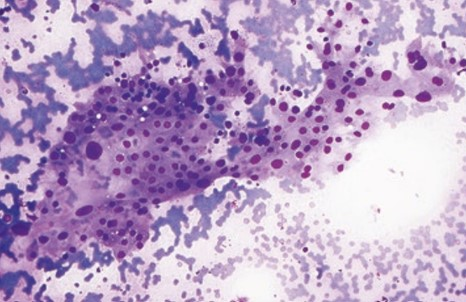
Hürthle cells (oncocytes) can be a prominent component of a benign follicular nodule. 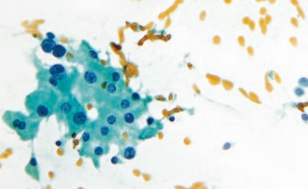
Hürthle cells have abundant granular cytoplasm, large nuclei, and prominent nucleoli and can show mild anisonucleosis. 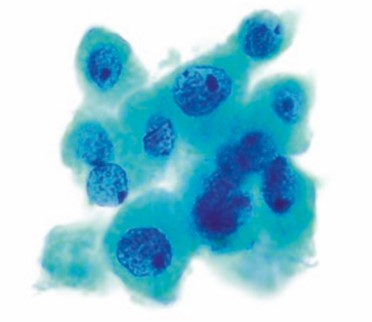
Hürthle cells with abundant granular cytoplasm and prominent nucleoli. 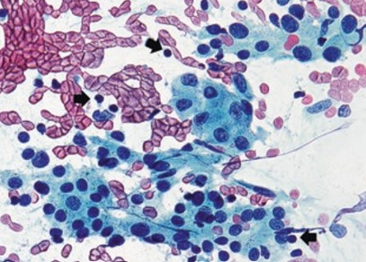
Hürthle cells may predominate in any given sample, raising the possibility of a Hürthle cell neoplasm. Rare lymphocytes are present in the background (arrows). - Histiocytes/Macrophages
- Cytoplasm often contains reddish brown hemosiderin pigment or other debris
- Eccentric, often pyknotic nuclei
- Often found in benign processes such as thyroid cysts, degenerating colloid nodules, and hemorrhagic conditions
- Can also be found in abundance with papillary carcinoma
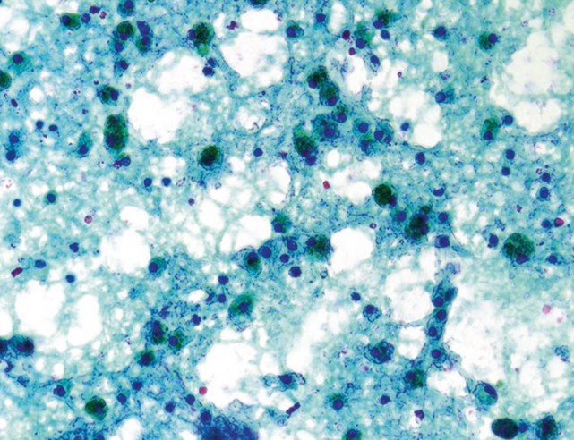
Abundant hemosiderin-laden macrophages and degenerated cyst fluid contents. Macrophages do not count toward specimen adequacy, making this nondiagnostic. 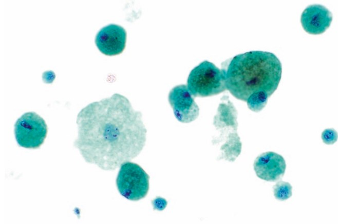
Macrophages are typically noncohesive, with abundant cytoplasm that often contains golden brown hemosiderin pigment with the Papanicolaou stain. 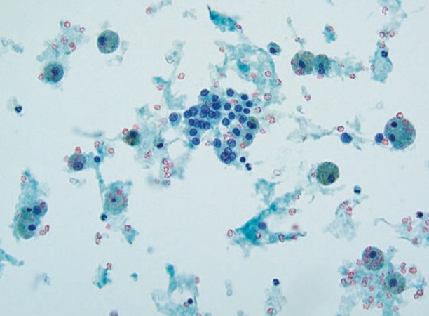
Abundant macrophages and few benign thyroid follicular cells are present. - Lymphocytes
- Occasional lymphocytes are normally found in thyroid material as part of the circulating blood
- Pay attention to the number of lymphocytes
- When found in large numbers without other thyroid cells, suggest that a lymph node, rather than thyroid nodule has been aspirated
- When found in increased number and associated with Hurtle cells, may indicate Hashimoto’s thyroiditis
- Differential is naked follicular cell nuclei and lymphoma
- White blood cells will be found in thyroid material as part of the peripheral, circulating blood
- Large numbers of leukocytes are found in acute thyroiditis
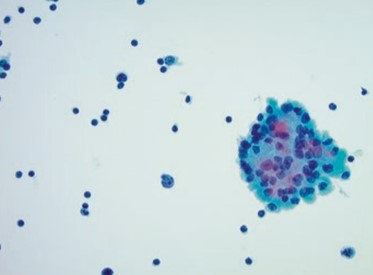
Lymphocytes are dispersed as isolated cells and can infiltrate clusters of Hürthle cells. 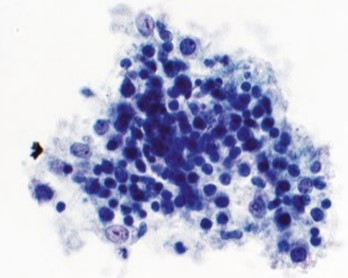
Germinal center fragments are often present, comprised of a heterogeneous mix of polymorphic lymphocytes and larger dendritic cells. 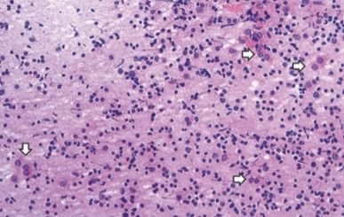
Lymphoid cells may predominate in an aspirate, raising the possibility of lymphoma. Rare Hürthle cells (oncocytes) are seen in the background (arrows). - Colloid Material
- Important acellular material
- Colloid is a glycoprotein and is an important diagnostic criteria in the interpretation of thyroid material
- Pay attention to the processing and the amount, consistency of colloid
- Can be honeylike, watery-thin and filmy and dense round, irregular, bubble-gum consistency
- In benign conditions, such as colloid nodules, colloid tends to be abundant, thin, homogenous and watery
- Staining reaction ranges from blue to pink to orange on Pap stain
- Purple and chicken-wire drying on Diff-Quik stain
- Conventional smear-It often has “holes” giving a “Swiss-cheese appearance from air drying
- Liquid-based dissolves it, can look like tissue paper, can be small round pools
- Overall, with neoplasms, the amount of colloid decreases and becomes thickened
- Often found in small pools or patches
- In papillary carcinoma it has a, thick, stretched, bubble gum appearance
- Colloid stains positive with PAS and may stain positive with mucicarmine
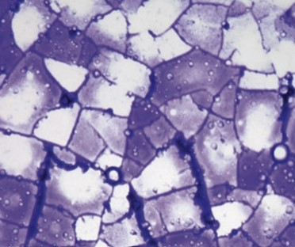
Watery colloid stains blue-violet with air-dried, Romanowsky-stained preparations and often shows a chicken-wire appearance. 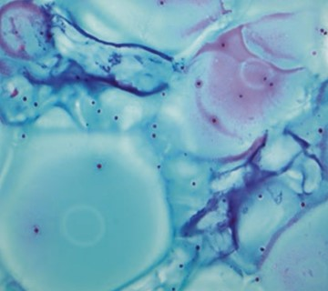
Watery colloid is light green or pink with alcohol-fixed, Papanicolaou-stained preparations and has a “thin membrane” or “cellophane coating” appearance, often with coalescing “puddles”. 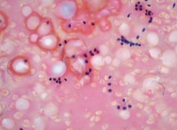
Colloid is easier to recognize when it forms characteristic folds and lacunae, Papanicolaou stain. 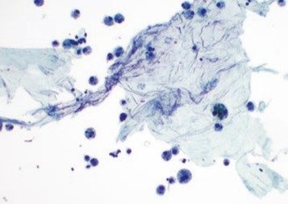
Watery colloid has a thin, “folded tissue-paper” appearance on ThinPrep. - Psammoma Bodies
- May be found in benign and malignant conditions
- Often found in association with papillary carcinoma (about 50% of PTC)
- Concentric, red to purple structures
- They form at the tip of a papilla due to circumferential avascular necrosis, resulting in the concentric lamellations of the classic psammoma body.
- Calcifications (see image 42 in DeMay) appear as broken eggshells but same glassy features=dystrophic calcifications
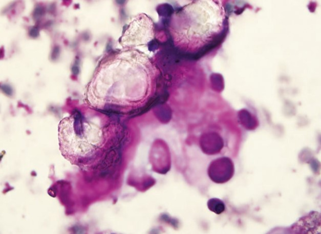
Psammoma bodies are a characteristic feature of papillary carcinoma. 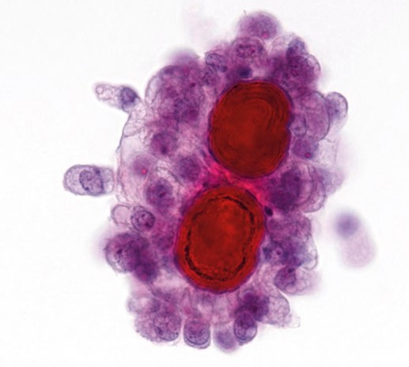
Psammoma bodies here are lined by atypical cells with oval, pale nuclei showing hobnail features. 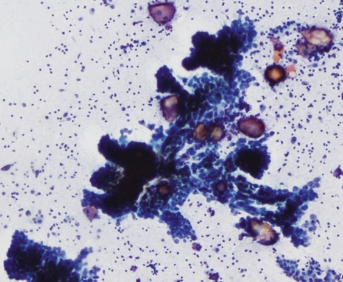
Papillary fragments associated with psammoma bodies in a lymphocytic background. - Contaminants
- Often during the procedure, cells from adjacent sites are sampled
- These are considered to be “contaminants”
- Sites include lymph nodes, trachea
- May also see ciliated cells, squamous cells adipose tissue and skeletal muscle
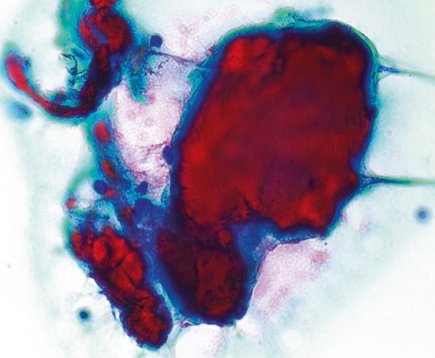
Skeletal muscle, likely picked up from the needle transversing neck muscles. 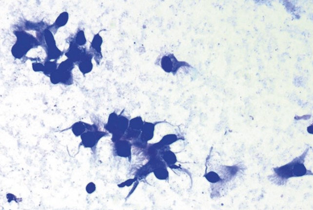
Puncture of the tracheal lumen (more common when biopsying isthmus) leads to FNA showing ciliated respiratory epithelium from the trachea. Images
Example cytology image Papanicolaou stain, 400× References
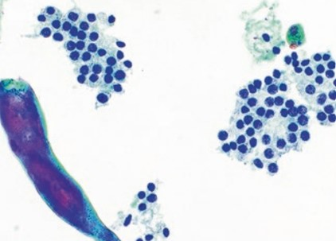
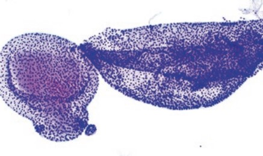
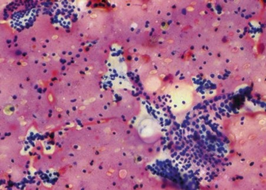
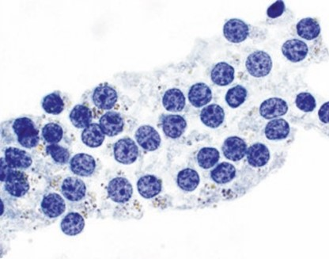